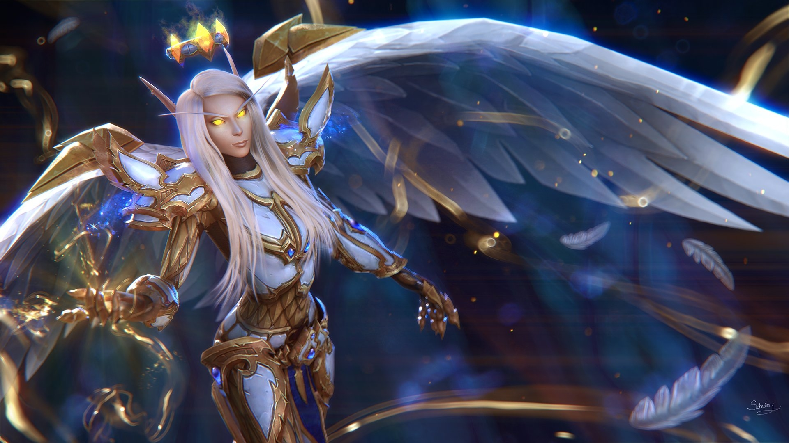

Rotation du navigateur
Clique sur le pour faire bouger la page :)
DeveloppeurPaladin
Le Paladin est un mélange de combattant au corps-à-corps et dans une moindre mesure de sorcier de la lumière. Le Paladin est idéal pour des groupes grâce à ses soins, ses techniques défensives et autres compétences. Les Paladins utilisent des bénédictions très utiles pour les membres du groupe.